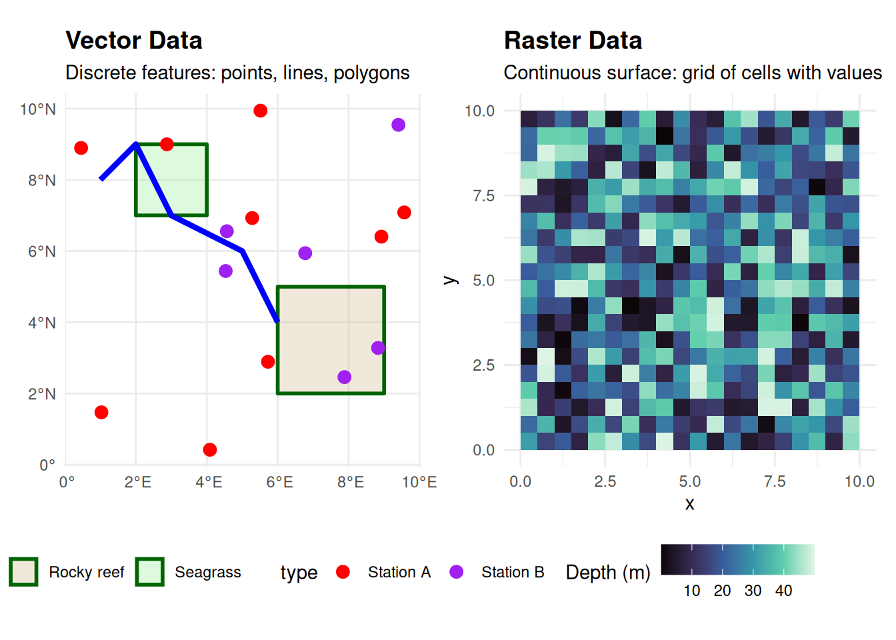
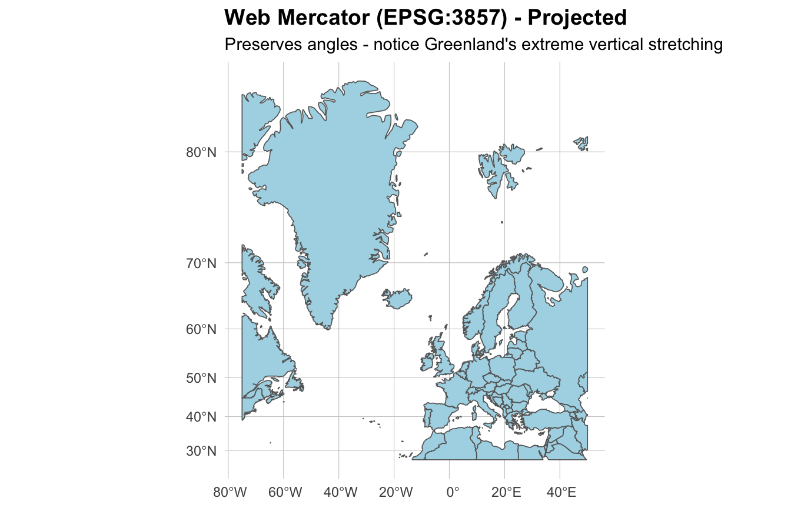
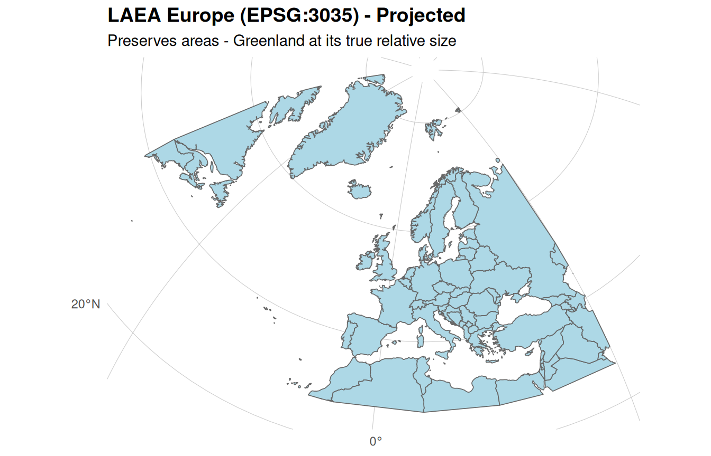
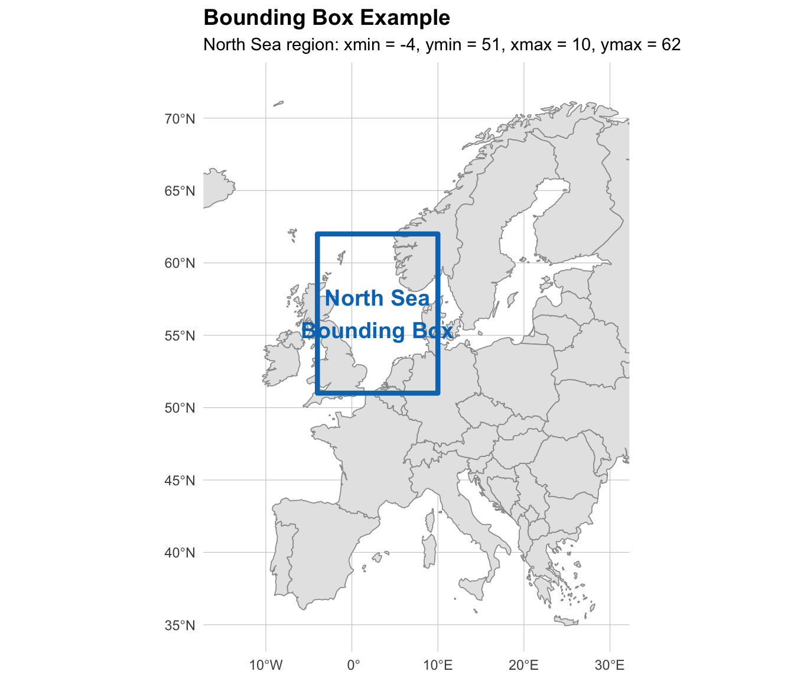

Geospatial Concepts & Glossary
Introduction
This page provides foundational knowledge for working with geospatial marine data. If you’re new to spatial analysis or need a refresher, start here before diving into the tutorials.
Spatial Data Types
Geospatial data comes in two fundamental forms: vector and raster (Figure 1). Understanding the difference is crucial for choosing the right analysis methods.
Vector Data
Vector data represents discrete geographic features as points, lines, or polygons. Each feature has a precise location and can carry associated attributes (metadata).
Common vector data types:
- Points - Specific locations (e.g., species observation sites, sampling stations, platform locations)
- Lines - Linear features (e.g., ship tracks, transects, pipelines)
- Polygons - Enclosed areas (e.g., marine protected areas, habitat boundaries, survey regions)
Examples in EMODnet:
- Marine protected area boundaries
- Species occurrence records
- Subsea infrastructure (pipelines, cables)
- Habitat classification polygons
- Survey locations
Vector data is ideal when you need exact boundaries, discrete locations, or want to perform operations like counting features or measuring precise distances.
Raster Data
Raster data represents continuous spatial phenomena as a grid of cells (pixels), where each cell contains a value representing a measurement or category.
Common raster characteristics:
- Organized as rows and columns of cells
- Each cell has a specific resolution (size)
- Values can be continuous (e.g., depth, temperature) or categorical (e.g., habitat types)
- Often used for environmental variables
Examples in EMODnet:
- Bathymetric depth models
- Species abundance grids
- Habitat suitability indices
- Environmental variables (temperature, salinity)
- Derived biodiversity metrics
Raster data excels at representing continuous surfaces, enabling analyses like extracting values at points, calculating zonal statistics, or modeling spatial patterns.
Web Services for Spatial Data
What is a Web Service?
A web service is a standardized protocol that allows software applications to communicate with databases over the internet. In the context of spatial data, web services provide programmatic access to spatial databases - you send a request (e.g., “give me species observations in this bounding box”) and the service queries its database and returns the data.
Essentially, web services are spatial databases + standardized communication protocols that let you query and retrieve data through HTTP requests instead of needing direct database access.
Key benefits:
- Programmatic access - Query data directly from R without manual downloads
- Selective retrieval - Request only specific regions, time periods, or attributes
- Always current - Access the latest data without managing file versions
- Reproducible - Your code documents exactly what data was retrieved
- Efficient - Download only what you need, reducing bandwidth and storage
How Web Services Work
Figure 2 illustrates the typical workflow when accessing EMODnet data through web services.
flowchart LR
A[Your R Script] -->|HTTP Request<br/>bbox, layer, filters| B[EMODnet WFS/WCS Server]
B -->|Query| C[(Spatial Database)]
C -->|Matching Data| B
B -->|Response<br/>GeoJSON/GeoTIFF| A
A -->|Load into| D[R Object<br/>sf or terra]
style A fill:#e1f5ff
style B fill:#fff4e1
style C fill:#f0f0f0
style D fill:#e1f5ff
OGC Standards and Spatial Data Types
The Open Geospatial Consortium (OGC) has developed different standard protocols optimized for different types of spatial data. The protocols, underlying database technologies, and data formats all differ based on whether you’re working with vector or raster data.
EMODnet provides two primary types of OGC-compliant geospatial web services, each designed for a specific spatial data type:
WFS (Web Feature Service)
WFS delivers vector data - discrete geographic features with attributes.
Key characteristics:
- Returns features in formats like GeoJSON or GML
- Supports spatial and attribute filtering
- Allows querying specific areas or feature properties
- Ideal for points, lines, and polygons
In R: Use the emodnet.wfs package to access WFS services. The package simplifies discovering available layers, filtering by extent or attributes, and retrieving data as sf objects.
Example WFS data from EMODnet:
- Species occurrences and distributions
- Marine protected area boundaries
- Infrastructure features
- Habitat polygons
WCS (Web Coverage Service)
WCS delivers raster data - gridded coverage representing continuous variables.
Key characteristics:
- Returns coverage in formats like GeoTIFF
- Supports spatial and temporal subsetting
- Can extract specific bands from multi-band datasets
- Ideal for environmental layers and modeled surfaces
In R: Use the emodnet.wcs package to access WCS services. The package handles coverage discovery, spatial/temporal subsetting, and returns data as terra raster objects.
Example WCS data from EMODnet:
- Bathymetric depth models
- Species abundance and diversity grids
- Habitat suitability models
- Gridded biodiversity metrics
Advantages of Web Services
Compared to direct file downloads, web services offer:
- On-demand access - Get only the data you need, when you need it
- Spatial filtering - Request data for specific regions using bounding boxes
- Temporal subsetting - Extract data for particular time periods
- Always current - Access the latest data without managing downloads
- Reproducibility - Script your data access for transparent, repeatable workflows
Coordinate Reference Systems (CRS)
A Coordinate Reference System defines how coordinates relate to locations on Earth’s surface. Understanding CRS is essential for accurate spatial analysis.
The Challenge: From 3D Earth to 2D Maps
Earth is a three-dimensional sphere, but maps and computer screens are two-dimensional. Think of trying to peel an orange and flatten the peel completely - you can’t do it without distorting, stretching, tearing, or overlapping parts of it. This is the fundamental challenge of cartography.
Projections are different methods of “peeling and flattening” Earth’s surface. Just as there are many ways you could cut and flatten an orange peel (peel it in strips, cut it into wedges, try to keep it in one piece), there are many different projection methods, each making different choices about:
- Where to cut (what regions to split)
- What to stretch (which areas get distorted)
- What to preserve (angles, areas, distances, or shapes)
There is no perfect solution - every projection sacrifices something. This is why dozens of projections exist: each is optimized for different purposes and geographic regions.
NoteEPSG Codes
Throughout this page, you’ll see CRS referenced by EPSG codes (e.g., EPSG:4326, EPSG:3857). EPSG stands for the European Petroleum Survey Group (now maintained by the International Association of Oil & Gas Producers), which created a standardized registry assigning unique numeric codes to coordinate reference systems. These codes provide an unambiguous way to specify which CRS you’re using.
Geographic vs Projected CRS
Geographic Coordinate Systems (Unprojected)
Geographic CRS don’t actually “flatten” Earth - they describe locations on the 3D spheroid surface using angles (latitude and longitude in degrees). Think of this as leaving the orange intact and describing locations by their angular position from the center.
- Example: WGS84 (EPSG:4326) (Figure 3 (a)) - Most common for global marine data and default for EMODnet services
- Units in degrees, not meters
- Good for storing and sharing data globally
- Not suitable for measurements - a degree of longitude represents different distances at different latitudes (degrees get closer together near the poles)
Projected Coordinate Systems
Projected CRS actually perform the “flattening” using mathematical transformations. Each projection is a different flattening method with different trade-offs:
Web Mercator (EPSG:3857) (Figure 3 (b)) - “Peels the orange” by stretching areas increasingly toward the poles. Preserves angles (conformal projection), which historically made it invaluable for maritime navigation - sailors could plot a straight line between two points and maintain a constant compass bearing throughout their journey. However, this comes at the cost of severely distorting areas at high latitudes. Used by most web maps because it makes the whole world fit in a square.
UTM zones (e.g., EPSG:32631 for UTM 31N) - “Cuts the orange” into 60 vertical strips (zones), each 6° of longitude wide. Each strip is flattened with minimal distortion within that zone. Excellent for regional analysis.
Lambert Azimuthal Equal Area (EPSG:3035) (Figure 3 (c)) - “Flattens the orange” while preserving area relationships. A 100 km² habitat appears as 100 km² on the map, regardless of location. Essential for statistical analyses involving area.
Local projections - Optimized flattening methods for specific countries or regions, minimizing distortion in areas of interest.
Figure 3 compares these three coordinate reference systems using Europe and Greenland to illustrate the dramatic differences in how projections distort geographic features.



Why This Matters for Marine Spatial Analysis
Measurements require projected CRS - You can’t accurately calculate distances or areas in degrees (geographic CRS). You need a projection that converts to meters.
Choose projections for your region - A projection optimized for Europe will distort tropical regions. Use UTM zones for your study area or regional equal-area projections.
Match your analysis goal - Use equal-area projections for habitat area calculations, equidistant projections for dispersal distance analyses, or conformal projections for angular relationships.
Alignment is critical - All datasets in an analysis must use the same CRS, or features won’t align correctly.
Working with CRS in R
Both major R spatial packages provide CRS transformation functions:
- Vector data (sf) - Use
st_transform()to convert between coordinate systems - Raster data (terra) - Use
project()to reproject raster layers
The tutorials demonstrate when and how to transform between CRS for different types of spatial analyses.
Key R Packages
sf - Simple Features for R
The sf package is the modern standard for vector spatial data in R.
Key features:
- Represents spatial data as data frames with geometry columns
- Integrates with tidyverse workflows
- Provides spatial operations (intersections, buffers, joins, etc.)
- Handles CRS transformations
- Reads/writes common spatial formats
When to use: Working with points, lines, polygons, or any vector data.
terra - Spatial Data Analysis
The terra package is the modern replacement for raster, designed for raster spatial data.
Key features:
- Handles single and multi-layer rasters
- Performs raster algebra and focal operations
- Extracts values at points or within polygons
- Manages large datasets efficiently
- Supports raster-vector operations
When to use: Working with gridded data, environmental layers, or continuous surfaces.
Common Spatial Operations
Vector Operations (sf)
Spatial intersection - Identifies features that overlap spatially, returning the geometric intersection and combined attributes from both input layers. Useful for finding which features from different datasets occupy the same locations (e.g., protected areas intersecting with infrastructure).
Buffering - Creates zones of specified distance around features, generating polygons that represent areas within a given radius. Essential for proximity analyses, such as identifying areas within a certain distance of sampling stations or evaluating buffer zones around sensitive habitats.
Spatial joins - Combines features from two layers based on their spatial relationship (e.g., contains, intersects, within). Allows you to transfer attributes from one layer to another based on location, such as assigning habitat types to species occurrence points or aggregating observations within management zones.
Distance calculations - Measures distances between features, either point-to-point or between features and geometries. Critical for analyses involving dispersal distances, connectivity assessments, or identifying nearest neighbors.
Area and length measurements - Calculates geometric properties of features, providing area measurements for polygons and length measurements for lines. Required for quantifying habitat extent, assessing patch sizes, or measuring transect lengths.
Raster Operations (terra)
Extraction - Retrieves raster cell values at specified point locations or within polygon boundaries. Commonly used to extract environmental variables (depth, temperature, salinity) at species occurrence locations or calculate zonal statistics within habitat polygons.
Masking - Restricts raster data to areas defined by a polygon or another raster, setting values outside the mask to NA. Useful for limiting analyses to specific regions such as marine protected areas, exclusive economic zones, or specific depth ranges.
Raster algebra - Performs mathematical operations on raster layers, either within a single layer (e.g., unit conversions, transformations) or across multiple layers (e.g., calculating change between time periods, combining variables). Enables creation of derived metrics like biodiversity change or habitat suitability indices.
Aggregation and resampling - Changes raster resolution by combining or subdividing cells. Aggregation reduces resolution for computational efficiency or matching other datasets, while resampling adjusts resolution or aligns grids from different sources.
Focal operations - Applies functions to neighborhoods of cells, such as calculating moving window statistics (mean, standard deviation) or smoothing. Used for identifying spatial patterns, creating terrain derivatives, or reducing noise in environmental data.
Data Formats
Understanding spatial data formats is important when working with web services, even through R packages. While the emodnet.wfs and emodnet.wcs packages handle data retrieval and automatically load results as R objects (sf for vector, terra for raster), the underlying format requested from the service can have significant practical implications:
Download speed and data size - Different formats have different compression and encoding schemes, affecting transfer time and bandwidth usage.
Geometry types and plotting compatibility - Format choice affects what feature geometries are returned. For example, WFS services may return complex geometry types like MULTISURFACE in GML format, which cannot be easily plotted and require conversion to standard POLYGONs. Requesting GeoJSON format instead often returns simpler geometry types that integrate directly with plotting workflows.
Saving data locally - After retrieving data from EMODnet, you may want to save it for archival, sharing with collaborators, or use in other software. Understanding format characteristics helps you choose the best option for your needs.
The tutorials demonstrate when and how to specify output formats to optimize your workflow.
Vector Formats
GeoJSON (.geojson)
- Text-based, human-readable
- Widely supported across platforms
- Good for web applications and data sharing
- Default output from many WFS services
Shapefiles (.shp + supporting files)
- Traditional GIS format
- Requires multiple files (.shp, .shx, .dbf, .prj)
- Well-supported but has limitations (field name length, size limits)
GeoPackage (.gpkg)
- Modern, single-file format
- Supports multiple layers
- No size limits
- Recommended for new projects
Raster Formats
GeoTIFF (.tif)
- Industry standard for raster data
- Embeds spatial reference information
- Supports multiple bands
- Efficient for large datasets
- Default output from many WCS services
NetCDF (.nc)
- Multi-dimensional arrays
- Common for oceanographic and climate data
- Handles time series and multiple variables
- Used by Copernicus Marine Service
Bounding Boxes and Spatial Queries
A bounding box defines a rectangular area of interest using minimum and maximum coordinates (xmin, ymin, xmax, ymax). Bounding boxes are fundamental to spatial queries, allowing you to request only the data you need from web services rather than downloading entire datasets. Figure 4 shows a bounding box for the North Sea region.

Why Use Bounding Boxes?
Bounding boxes enable efficient spatial data retrieval by:
- Reducing data transfer - Download only features or coverage within your study area
- Improving performance - Smaller data volumes mean faster processing and lower memory requirements
- Focusing analyses - Limit results to relevant geographic regions from the start
- Reproducible workflows - Explicit spatial extent definitions make analyses transparent and repeatable
Bounding Boxes in EMODnet Services
Both WFS (vector) and WCS (raster) services accept bounding box parameters to spatially filter results. When querying EMODnet data through the emodnet.wfs and emodnet.wcs packages, you specify bounding boxes as numeric vectors with minimum and maximum coordinates in the appropriate coordinate reference system (typically WGS84 lon/lat for EMODnet services).
The tutorials demonstrate practical bounding box usage for retrieving EMODnet data in specific regions, from local study sites to broader management areas.
Glossary of Common Terms
| Term | Definition |
|---|---|
| Bathymetry | The measurement of ocean depth; underwater topography. |
| Benthic | Relating to organisms living on or in the seafloor. |
| Biodiversity metrics | Quantitative measures of biological diversity (e.g., species richness, evenness, β-diversity). |
| β-diversity (Beta diversity) | Turnover in species composition between locations or time periods. |
| Bounding box | A rectangular area defined by minimum and maximum coordinates, used to specify a region of interest. |
| Buffer | An area of specified distance around a geographic feature. |
| CRS (Coordinate Reference System) | Defines how coordinates correspond to locations on Earth. |
| EPSG code | A unique numeric identifier for a coordinate reference system from the EPSG registry (e.g., EPSG:4326 for WGS84). Named after the European Petroleum Survey Group, now maintained by the International Association of Oil & Gas Producers. |
| Extent | The geographic area covered by a spatial dataset. |
| Feature | A discrete geographic entity in vector data (point, line, or polygon) with associated attributes. |
| Geometry | The spatial component of a feature (its shape and location). |
| Gridded data | Raster data organized as a regular grid of cells. |
| Intersection | The spatial overlap between geographic features. |
| Layer | A collection of geographic features or a raster dataset representing a theme. |
| Masking | Restricting raster data to areas defined by a polygon. |
| MPA (Marine Protected Area) | Designated ocean area where human activities are restricted for conservation. |
| Projection | A mathematical transformation converting Earth's curved surface to a flat map. |
| Raster | Gridded spatial data where each cell contains a value. |
| Resolution | The size of raster cells (e.g., 100m × 100m); smaller cells = finer detail. |
| Spatial join | Combining features from different layers based on spatial relationships. |
| Vector | Spatial data representing discrete features as points, lines, or polygons. |
| WCS (Web Coverage Service) | A standard protocol for serving raster data. |
| WFS (Web Feature Service) | A standard protocol for serving vector data. |
External Resources
Books and Guides
- Geocomputation with R - Comprehensive guide to spatial analysis in R by Robin Lovelace, Jakub Nowosad, and Jannes Muenchow
- Spatial Data Science - Modern approaches to spatial data analysis with R
- terra Documentation - Official terra package manual and tutorials
Package Documentation
- sf Package Vignettes - Detailed guides for working with vector data
- terra Package Reference - Complete function reference for raster operations
- emodnet.wfs Documentation - Guide to accessing EMODnet WFS services
- emodnet.wcs Documentation - Guide to accessing EMODnet WCS services
Additional Resources
- rspatial.org Tutorials - Free tutorials on spatial analysis with R
- CRAN Spatial Task View - Comprehensive overview of spatial packages in R
Ready to get started? Head to the tutorials to apply these concepts with real EMODnet data!